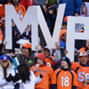
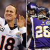
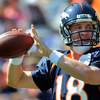
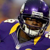

<!DOCTYPE html>
<html lang=”en”></html>
	<head>
    	<link href='http://fonts.googleapis.com/css?family=Racing+Sans+One' rel='stylesheet' type='text/css'>
		<meta charset=”utf-8”/>
        <meta name="viewport" content="width=device-width, initial-scale=1.0">
		<title>Peyton Manning: The Case for MVP</title>
		<link rel="stylesheet" href="css/main.css">
	</head>
<body>
	
    
  	<div id="fullpage">
    	<div id="navigation">
    	<ul>
        	<li class="logo"><a href="www.denverbroncos.com"></a></li>
            <li><a href="#">Home</a></li>
            <li><a href="#stats">2012 Stats</a></li>
            <li><a href="#ap">AD for MVP?</a></li>
            <li><a href="#gallery">Gallery</a></li>
    	</ul> 
	</div>
			<div id="paragraph1">
        		<h1>Mile High Feeling for the Mile High City</h1>
					<p>If a team has multiple skilled players at the same position, they say it is a good problem to have. Well, the NFL has a good problem going, as their league boasts two individuals deserving of the coveted Most Valuable Player award. It is a good problem because it is a hot topic everyone is discussing nationally, but also because Peyton Manning and Adrian Peterson performed phenomenally this season. What’s even more amazing, is that each is coming off important injuries; a torn ACL for Peterson and multiple neck surgeries for Manning.</p>
    		</div>
    
    	<div id ="wrapper">
     			<div class ="gallery">
                   <h2 class="gallery-text">Gallery</h2>
            			<div class="thumb"><a href="images/mvp.jpg"></a></div>
                		<div class="thumb"><a href="images/peytonAP1.jpg"></a></div>
               			<div class="thumb"><a href="images/Peyton1.jpg"></a></div>
                		<div class="thumb"><a href="images/adrianpeterson1.jpg"></a></div>
            		
                 </div> 
      
     		<section id="stats">
        		<h2 class="heading2">2012 Stats</h2>
           			<p>Manning finished the regular season first in completion percentage (68.8), second in passer rating (105.8), third in touchdowns (37) and sixth in yards (4,659), setting single-season Broncos franchise records for yards, completions (400) and touchdowns thrown. Manning also broke numerous NFL records. In the win over Kansas City to end the season, it was the 73rd time he threw for 3 TDs in a game, passing Brett Favre for most all time and his streak of four games with 300 yards and three scores is an NFL best. His 38 fourth quarter comebacks are more than anyone, while he was named AFC Offensive Player of the Month of October and December, the sixth time he’s taken home the award. When the regular season was over, he had led a team to 10-plus wins for the 12th time, while being <a href="http://www.nfl.com/probowl/story/0ap1000000114155/article/peyton-manning-tops-tom-brady-in-fans-pro-bowl-voting">voted into the Pro Bowl</a> <strong>with the most votes of anyone</strong> – for a 12th time, too.</p>
     		</section>   
    </div>

		<div id="bottom"> 
    		<article id="ap">  
      			<h2>AD for MVP?</h2>
        			<p>Peterson was prodigious in his play; coming a whole nine yards short of breaking Eric Dickerson’s all-time record of 2,105 rushing yards in a single season. Still, AD – short for “All Day,” a nickname given to him by his dad many years ago – ran remarkably, with a by far league leading 6.0 yards per carry average, going over the century mark in a game 10 times this year alone. He’s a workhorse that never gives up, even when getting contacted at or behind the line of scrimmage as he pushes through opponents by driving his supremely strong legs. What makes him most exciting to watch are the seven runs of 50-plus yards and Peterson put up 12 touchdowns this season. Simply stated, he’s a <em>once-in-a-generation type running back</em> that makes everything he does on the football field look effortless.</p>
      		</article>
        
        	<aside id="improve">
            <p>What sets Manning apart from Peterson is his outward leadership of the team; specifically, the offense. The old gunslinger knows what it takes to attain greatness in the NFL, being named MVP four previous times and winning a Super Bowl, and he’s pushed his teammates new and old to buy in to his system. They’ve done just that, taking on the intricate and sophisticated offense in an incredibly short period of time. When the game goes to commercial, Manning is there huddling his offense up and going over the small details that, when mastered, push a team beyond good and into the realm of greatness. That offense is the second highest scoring group in all of football and the scary thing for opponents is they’re only continuing to improve.</p>
         	</aside>
           
        	<p id="end">Undoubtedly, this is one of the top Broncos teams in the history of the franchise and although they may be the most complete team in football, Denver would be nowhere near the team they are today without <strong>your NFL MVP, Peyton Manning.</strong></p>
		</div>
        
        <div id="form">
       <center> <h2>Vote Now</h2> </center>
		<form action="#" method="post">
            
            <div>
           <center> <h3>Who Should Be MVP</h3> </center>
            <center><select name="vote" id="vote">
            	<option>Peyton Manning</option>
                <option>Adrian Peterson</option>
            </select></center>
            <div>
            <label for="message">Other:</label>
			<textarea id="message" placeholder="If not them, then who?"></textarea>
            </div>
            
      		<div>
			<label for="name">Name:</label>
			<input type="text" id="name" placeholder="Who are you" />
            </div>
			
            <div>
			<label for="email">Email:</label>
			<input type="email" id="email" placeholder="Addy here" />
            </div>
            
            <div>
			<center><input type="submit" value="Send message" /></center>
            </div>
  		
        </form>
        </div>
   </div>
          <table>
<tr>
<th>2012</th>
<th>2010</th>
<th>2009</th>
</tr>
<tr>
<td>win</td>
<td>win</td>
<td>win</td>
</tr>
</table>

        
        
        <div id="footer">Story by: Rich Kurtzman, courtesy of CBS Denver</div>
</body>
   	
</html>